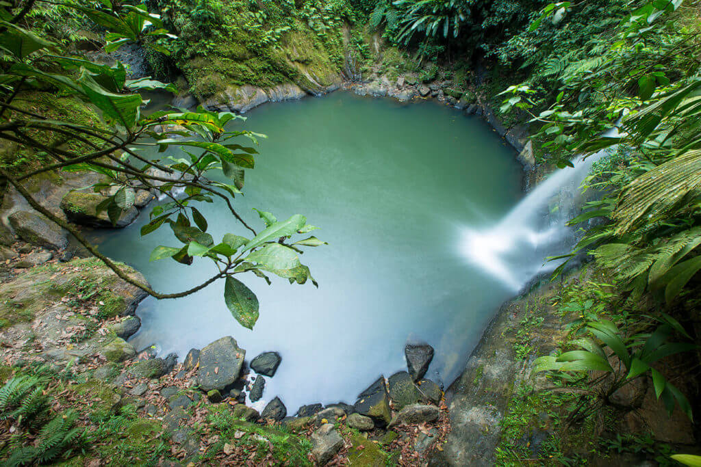
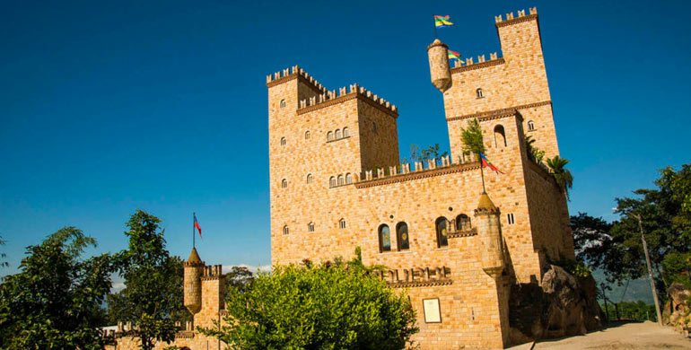
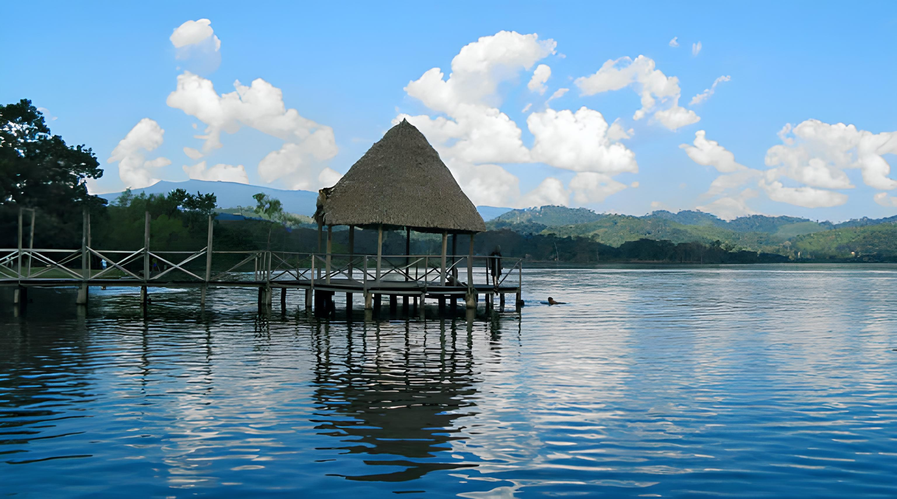

CONOZCA
LOS MEJORES PAQUETES QUE TENEMOS PARA TI.
Liberty NFT Market is a really cool and professional design for your NFT websites. This HTML CSS template is based on Bootstrap v5 and it is designed for NFT related web portals. Liberty can be freely downloaded from TemplateMo's free css templates.




